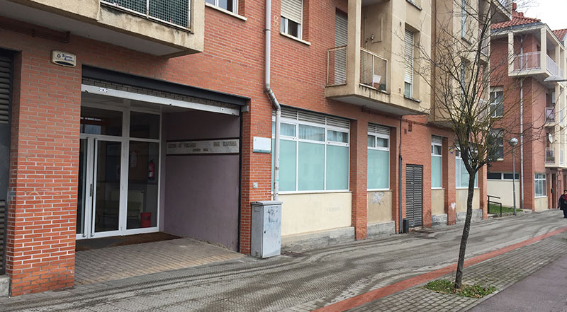

CEPA Laudio HHI
Latiorro, 8 · 01400 Laudio- Telefonoa
- 946 721 734 · 674 002 617
- Emaila
- 010035aa@hezkuntza.net
- Ordutegia
- Astelehenetik ostegunera: 09:00–13:30
- Ostiraletan: 09:00–14:00
Harremana
Deitu, idatzi edo etorri ikasguneetako batera.

Irailaren 1etik 12ra eta ekainaren 22tik 30era: goizez (9:00–13:30/14:00)